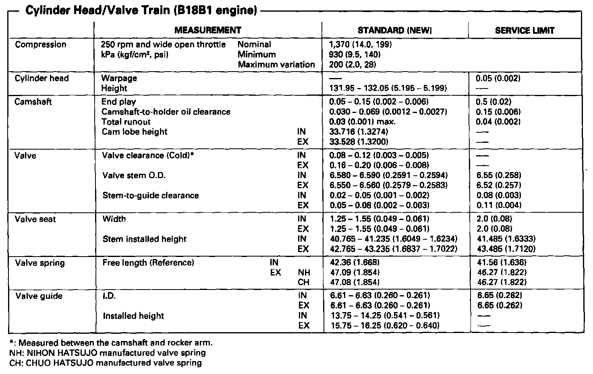

Operation CHARM
: Car repair manuals for everyone.
Home
>>
Acura
>>
1995
>>
Integra (RS, LS) L4-1834cc 1.8L DOHC PFI
>>
Repair and Diagnosis
>>
Engine, Cooling and Exhaust
>>
Engine
>>
Specifications
>>
Service Limits & General Specs
>>
Cylinder Head, Valve Guides & Valve Seats
Cylinder Head, Valve Guides & Valve Seats
